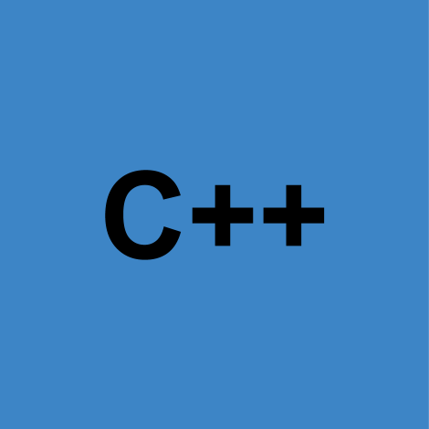

-

CS463G - Introduction to Artificial Intelligence
Guest instructor
with Dr. Judy Goldsmith, UK, Fall 2015 -
CS375 - Logic and Theory of Computing
Grader
with Dr. Miroslaw Truszczynski, UK, Spring 2015 -

CS215 - Introduction to Program Design, Abstraction and Problem Solving
Teaching assistant
with Dr. Yi Pike, UK, Spring 2015 -
CS215 - Introduction to Program Design, Abstraction and Problem Solving
Teaching assistant
with Dr. Yi Pike, UK, Fall 2014 -
CS215 - Introduction to Program Design, Abstraction and Problem Solving
Teaching assistant
with Dr. Neil Moore, UK, Spring 2013 -
CS215 - Introduction to Program Design, Abstraction and Problem Solving
Teaching assistant
with David Brown, UK, Fall 2012 -
Java EE Architecture and Practice
Undergraduate teaching assistant
HIT, Spring 2010 -
Principle of Compiling
Undergraduate teaching assistant
HIT, Fall 2009